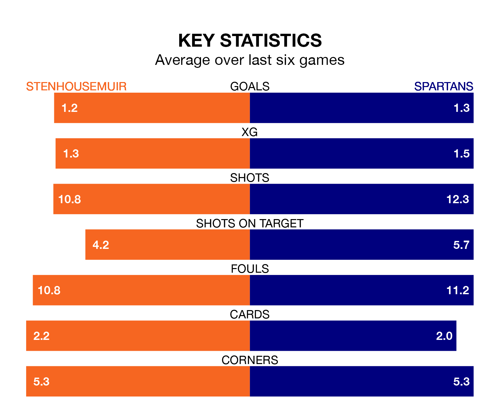

League Two's top two sides face each other at Ochilview Park in Saturday's kick-off, when Stenhousemuir host second-placed Spartans.
Stenhousemuir have picked up 18 wins and six draws from 27 games so far this season, and sit 16 points above the visitors going into the 3pm match.
The Spartans, meanwhile, have won 12 and drawn eight, picking up 44 points.
With 45 goals in 27 games so far this season, Stenhousemuir are the league's highest scorers with 1.7 goals per game. And they are conceding fewer than average, letting in 24 goals at a rate of 0.9 per game.
Spartans are also above average scorers, with 1.6 goals per game, compared to a league average of 1.3. They have conceded 1.2 goals per game.
In Blair Henderson, the Spartans have the league's most on-form striker so far this season. He has notched 15 goals in 27 appearances.
His goal rate of one every 159 minutes is slightly quicker than that of Matthew Aitken, the Warriors's top scorer with a goal every 163 minutes, and a total of 14 goals in 27 games.
In the last three years, Stenhousemuir and Spartans have played each other on three occasions. Stenhousemuir won all of them.
Their last meeting was on January 13, when Stenhousemuir won 2-0 away.
The hosts are in mixed form in League Two, with two wins and two draws from their last six games.
And also with two wins and two draws over that period, the away team's form is identical – they have both taken eight points from 18.
Stenhousemuir's last match was on March 2, a 1-0 win against Bonnyrigg Rose Athletic, with Aitken getting the goal for the Warriors.
Spartans drew 2-2 with Bonnyrigg Rose Athletic last time out, on Tuesday, with Henderson and Mark McNulty on the scoresheet.
Updated: 09:34 (UTC), 08/03/24